Tutorial¶
The following tutorial file will give you an introduction to fitting a mass spectrum with emgfit:
At first emgfit has to be imported
import emgfit as emg
### Import mass data, plot full spectrum and choose fit range
filename = "2019-09-13_004-_006 SUMMED High stats 62Ga" # input file (as exported with MAc's hist-mode)
skiprows = 38 # number of header rows to skip upon data import
m_start = 61.9243 # low-mass cut off
m_stop = 61.962 # high-mass cut off
spec = emg.spectrum(filename+'.txt',m_start,m_stop,skiprows=skiprows)

heading
### Detect peaks and add them to spectrum object 'spec'
spec.detect_peaks() # automatic peak detection
#spec.add_peak(61.925,species='?') # manually add a peak at x_pos = 61.925u
#spec.remove_peak(peak_index=0) # manually remove the peak with index 0
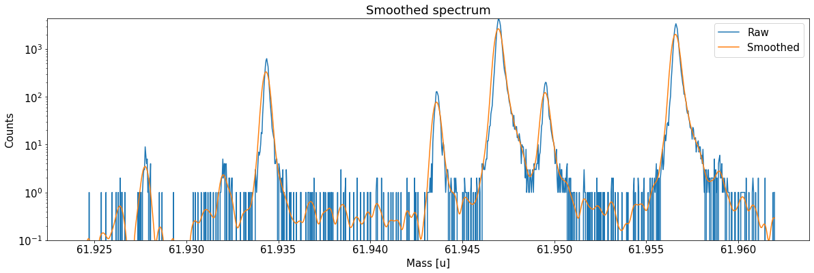
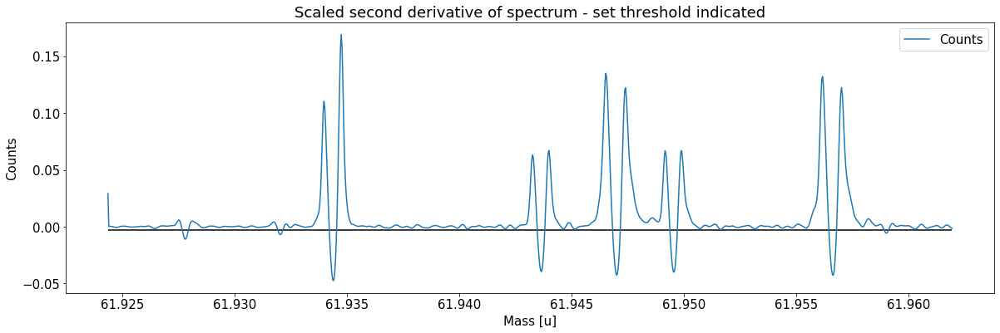
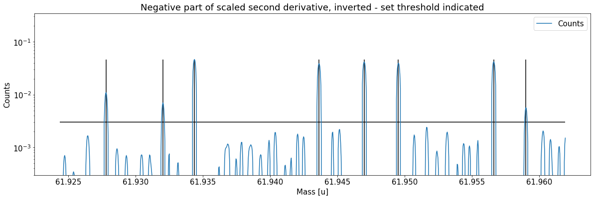
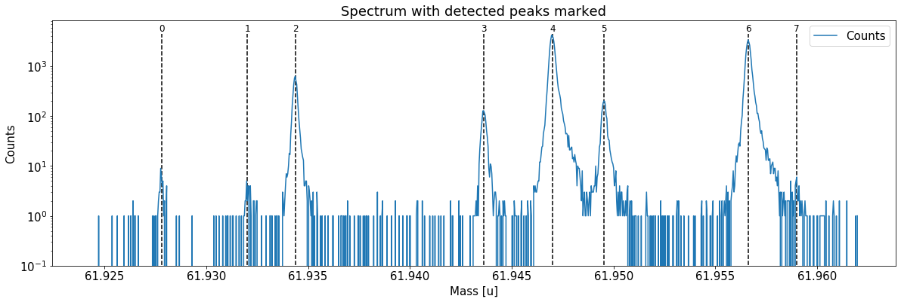
Peak properties table after peak detection:
| x_pos | species | comment | m_AME | m_AME_error | extrapolated | fit_model | cost_func | red_chi | area | area_error | m_fit | rel_stat_error | rel_recal_error | rel_peakshape_error | rel_mass_error | A | atomic_ME_keV | mass_error_keV | m_dev_keV | |
|---|---|---|---|---|---|---|---|---|---|---|---|---|---|---|---|---|---|---|---|---|
| 0 | 61.927800 | ? | - | None | None | False | None | None | None | None | None | None | None | None | None | None | None | None | None | None |
| 1 | 61.932021 | ? | - | None | None | False | None | None | None | None | None | None | None | None | None | None | None | None | None | None |
| 2 | 61.934369 | ? | - | None | None | False | None | None | None | None | None | None | None | None | None | None | None | None | None | None |
| 3 | 61.943618 | ? | - | None | None | False | None | None | None | None | None | None | None | None | None | None | None | None | None | None |
| 4 | 61.946994 | ? | - | None | None | False | None | None | None | None | None | None | None | None | None | None | None | None | None | None |
| 5 | 61.949527 | ? | - | None | None | False | None | None | None | None | None | None | None | None | None | None | None | None | None | None |
| 6 | 61.956611 | ? | - | None | None | False | None | None | None | None | None | None | None | None | None | None | None | None | None | None |
| 7 | 61.958997 | ? | - | None | None | False | None | None | None | None | None | None | None | None | None | None | None | None | None | None |
heading
spec.assign_species(['Ni62:-1e','Cu62:-1e',None,'Ga62:-1e','Ti46:O16:-1e','Sc46:O16:-1e','Ca43:F19:-1e',None])
spec.add_peak_comment('Non-isobaric',peak_index=2)
spec.show_peak_properties() # check the changes by printing the peak properties table
Species of peak 0 assigned as Ni62:-1e
Species of peak 1 assigned as Cu62:-1e
Species of peak 3 assigned as Ga62:-1e
Species of peak 4 assigned as Ti46:O16:-1e
Species of peak 5 assigned as Sc46:O16:-1e
Species of peak 6 assigned as Ca43:F19:-1e
Comment of peak 2 was changed to: Non-isobaric
| x_pos | species | comment | m_AME | m_AME_error | extrapolated | fit_model | cost_func | red_chi | area | area_error | m_fit | rel_stat_error | rel_recal_error | rel_peakshape_error | rel_mass_error | A | atomic_ME_keV | mass_error_keV | m_dev_keV | |
|---|---|---|---|---|---|---|---|---|---|---|---|---|---|---|---|---|---|---|---|---|
| 0 | 61.927800 | Ni62:-1e | - | 61.927796 | 4.700000e-07 | False | None | None | None | None | None | None | None | None | None | None | 62.0 | None | None | None |
| 1 | 61.932021 | Cu62:-1e | - | 61.932046 | 6.940000e-07 | False | None | None | None | None | None | None | None | None | None | None | 62.0 | None | None | None |
| 2 | 61.934369 | ? | Non-isobaric | NaN | NaN | False | None | None | None | None | None | None | None | None | None | None | NaN | None | None | None |
| 3 | 61.943618 | Ga62:-1e | - | 61.943641 | 6.940000e-07 | False | None | None | None | None | None | None | None | None | None | None | 62.0 | None | None | None |
| 4 | 61.946994 | Ti46:O16:-1e | - | 61.946993 | 1.760001e-07 | False | None | None | None | None | None | None | None | None | None | None | 62.0 | None | None | None |
| 5 | 61.949527 | Sc46:O16:-1e | - | 61.949534 | 7.320000e-07 | False | None | None | None | None | None | None | None | None | None | None | 62.0 | None | None | None |
| 6 | 61.956611 | Ca43:F19:-1e | - | 61.956621 | 2.440018e-07 | False | None | None | None | None | None | None | None | None | None | None | 62.0 | None | None | None |
| 7 | 61.958997 | ? | - | NaN | NaN | False | None | None | None | None | None | None | None | None | None | None | NaN | None | None | None |
heading
#spec.determine_peak_shape(species_shape_calib='Ca43:F19:-1e') # default settings and automatic model selection spec.determine_peak_shape(species_shape_calib='Ca43:F19:-1e',x_fit_range=0.0045) # user-defined fit range #spec.determine_peak_shape(species_shape_calib='Ca43:F19:-1e',fit_model='emg12',vary_tail_order=False) # user-defined model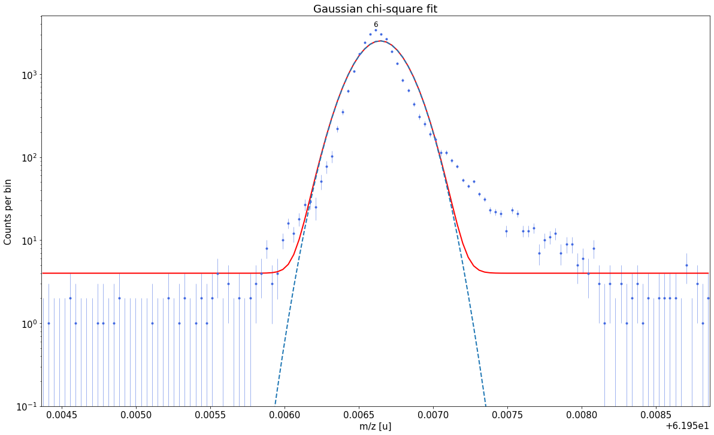 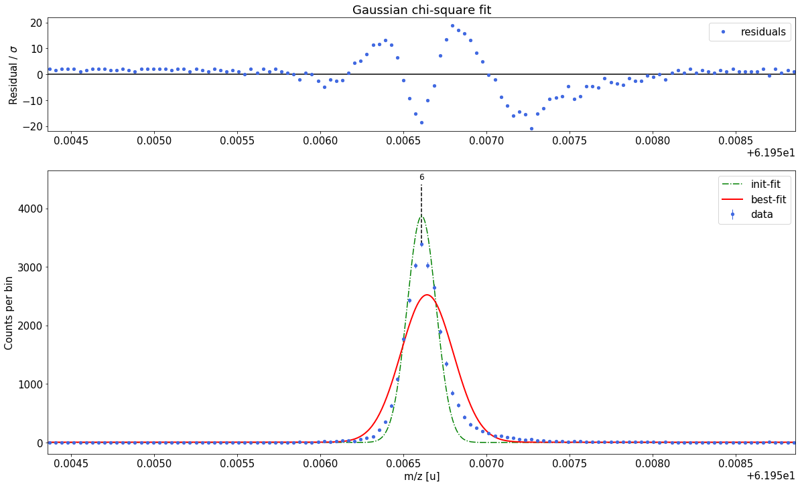##### Determine optimal tail order ##### ### Fitting data with Gaussian ###---------------------------------------------------------------------------------------------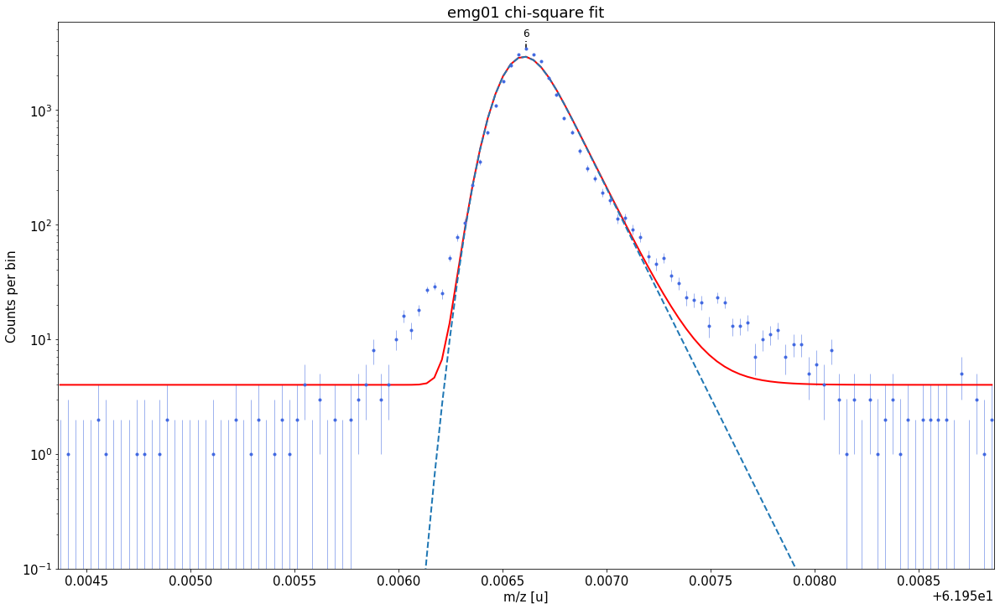 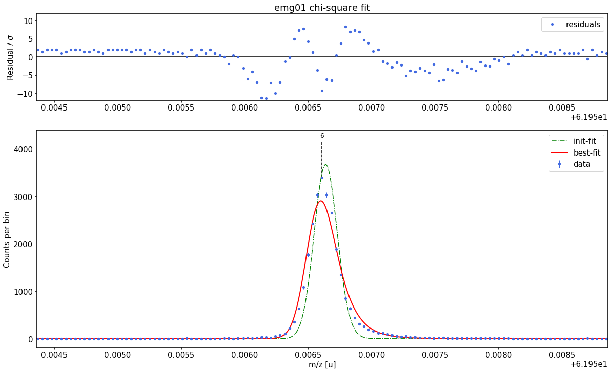Gaussian-fit yields reduced chi-square of: 45.57 +- 0.13 ### Fitting data with emg01 ###---------------------------------------------------------------------------------------------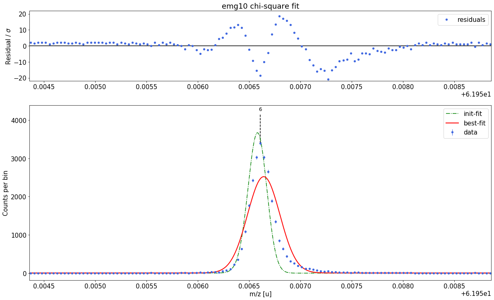emg01-fit yields reduced chi-square of: 13.79 +- 0.13 ### Fitting data with emg10 ###---------------------------------------------------------------------------------------------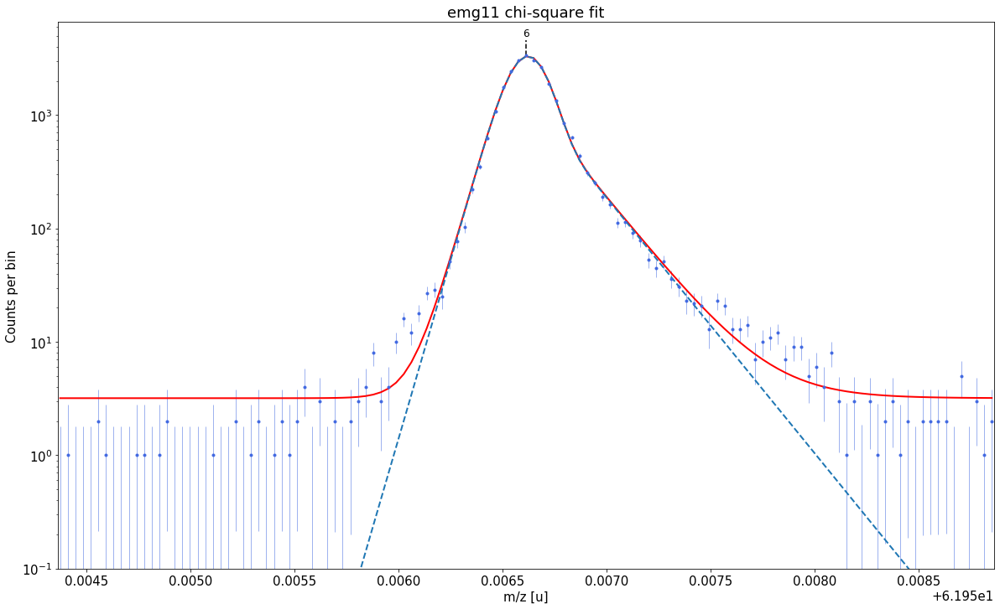 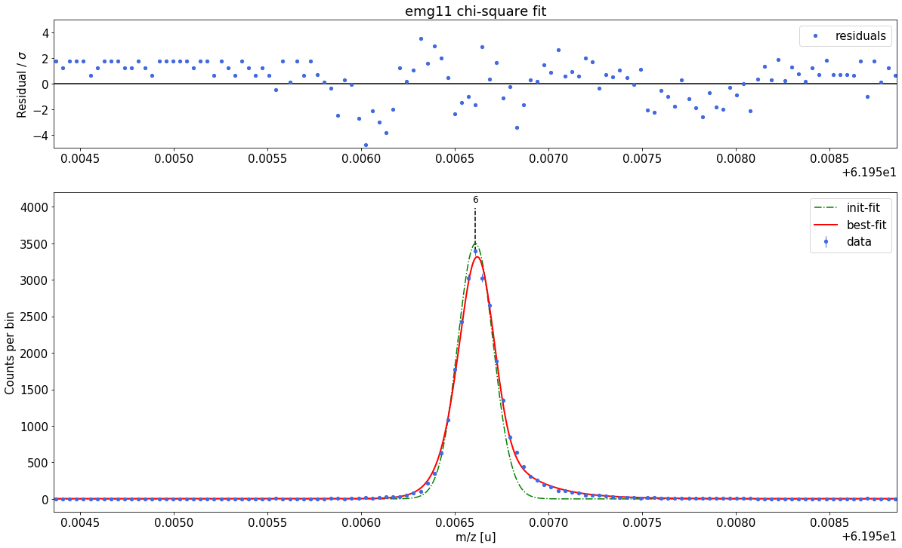emg10-fit yields reduced chi-square of: 45.96 +- 0.13 ### Fitting data with emg11 ###---------------------------------------------------------------------------------------------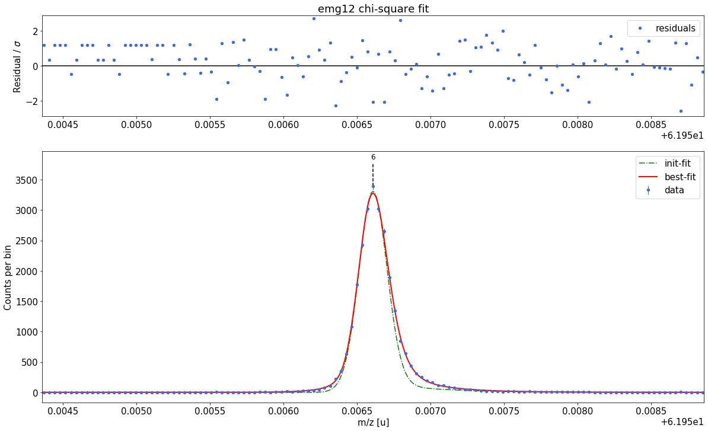emg11-fit yields reduced chi-square of: 2.6 +- 0.13 ### Fitting data with emg12 ###---------------------------------------------------------------------------------------------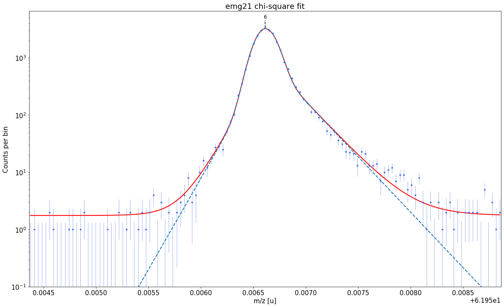 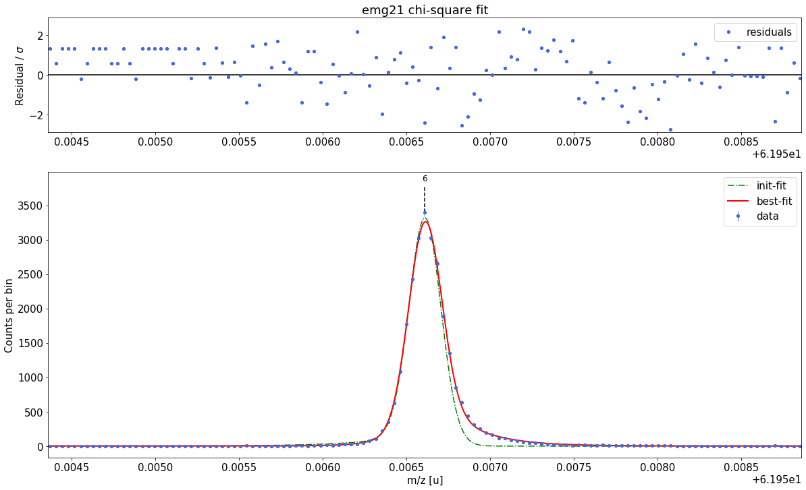emg12-fit yields reduced chi-square of: 1.22 +- 0.13 ### Fitting data with emg21 ###---------------------------------------------------------------------------------------------emg21-fit yields reduced chi-square of: 1.47 +- 0.13 ### Fitting data with emg22 ###---------------------------------------------------------------------------------------------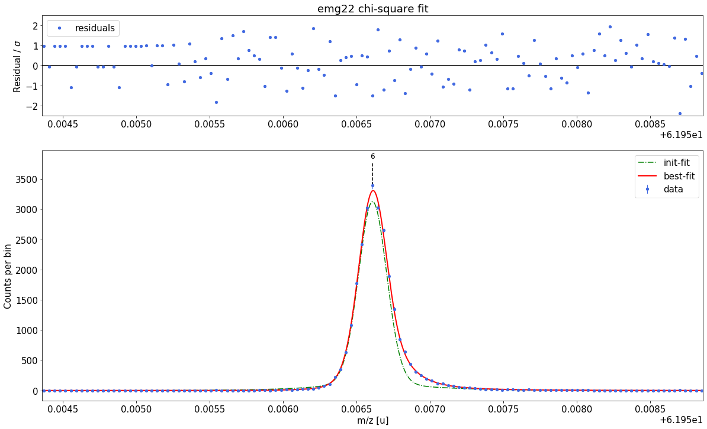
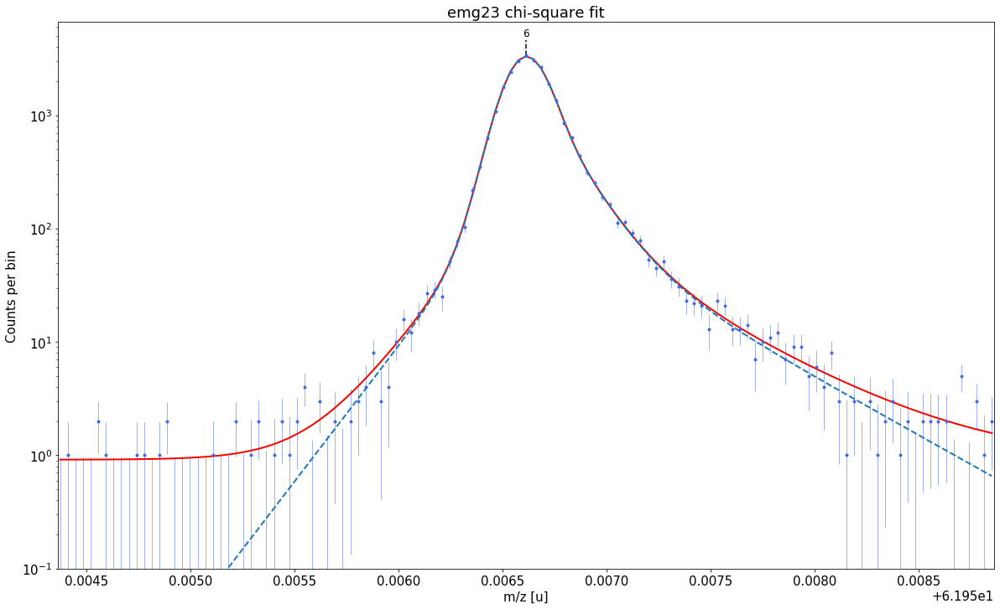 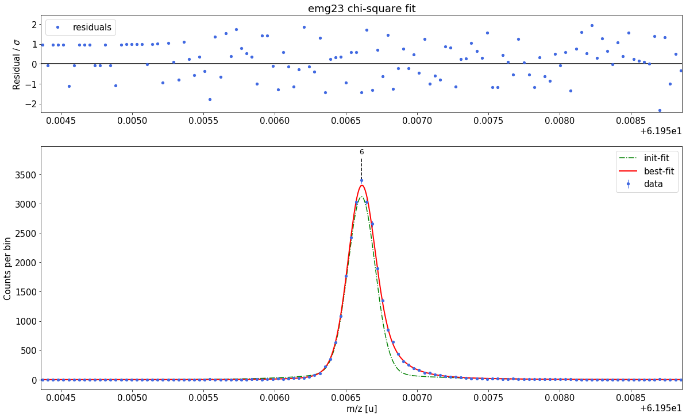emg22-fit yields reduced chi-square of: 0.96 +- 0.13 ### Fitting data with emg23 ###---------------------------------------------------------------------------------------------WARNING: p6_eta_m1 = 0.891 +- 2.086 is compatible with zero within uncertainty. This tail order is likely overfitting the data and will be excluded from selection. WARNING: p6_eta_m2 = 0.109 +- 2.086 is compatible with zero within uncertainty. This tail order is likely overfitting the data and will be excluded from selection. WARNING: p6_eta_p1 = 0.443 +- 6.292 is compatible with zero within uncertainty. This tail order is likely overfitting the data and will be excluded from selection. WARNING: p6_eta_p2 = 0.458 +- 4.68 is compatible with zero within uncertainty. This tail order is likely overfitting the data and will be excluded from selection. WARNING: p6_eta_p3 = 0.099 +- 6.292 is compatible with zero within uncertainty. This tail order is likely overfitting the data and will be excluded from selection. emg23-fit yields reduced chi-square of: 0.98 +- 0.13 ### Fitting data with emg32 ###---------------------------------------------------------------------------------------------WARNING: p6_eta_m3 = 0.007 +- 0.1 is compatible with zero within uncertainty. This tail order is likely overfitting the data and will be excluded from selection. emg32-fit yields reduced chi-square of: 0.98 +- 0.13 ### Fitting data with emg33 ###---------------------------------------------------------------------------------------------WARNING: p6_eta_m1 = 0.872 +- 4.49 is compatible with zero within uncertainty. This tail order is likely overfitting the data and will be excluded from selection. WARNING: p6_eta_m2 = 0.119 +- 4.168 is compatible with zero within uncertainty. This tail order is likely overfitting the data and will be excluded from selection. WARNING: p6_eta_m3 = 0.009 +- 4.49 is compatible with zero within uncertainty. This tail order is likely overfitting the data and will be excluded from selection. WARNING: p6_eta_p1 = 0.442 +- 12.792 is compatible with zero within uncertainty. This tail order is likely overfitting the data and will be excluded from selection. WARNING: p6_eta_p2 = 0.461 +- 9.645 is compatible with zero within uncertainty. This tail order is likely overfitting the data and will be excluded from selection. WARNING: p6_eta_p3 = 0.097 +- 12.792 is compatible with zero within uncertainty. This tail order is likely overfitting the data and will be excluded from selection. emg33-fit yields reduced chi-square of: 0.99 +- 0.14 ##### RESULT OF AUTOMATIC MODEL SELECTION: ##### Best fit model determined to be: emg22 Corresponding chi²-reduced: 0.96 ##### Peak-shape determination #####-------------------------------------------------------------------------------------------
Model
(Model(constant, prefix='bkg_') + Model(emg22, prefix='p6_'))Fit Statistics
fitting method least_squares # function evals 18 # data points 123 # variables 11 chi-square 107.821079 reduced chi-square 0.96268820 Akaike info crit. 5.79952458 Bayesian info crit. 36.7335525 Variables
name value standard error relative error initial value min max vary expression bkg_c 0.93751705 0.21448563 (22.88%) 0.1 0.00000000 4.00000000 True p6_amp 0.95184911 0.00599045 (0.63%) 0.8422080000000001 1.0000e-20 inf True p6_mu 61.9566396 4.0323e-06 (0.00%) 61.95661076349748 61.9466108 61.9666108 True p6_sigma 8.3414e-05 2.9557e-06 (3.54%) 8.68e-05 0.00000000 0.00508680 True p6_theta 0.72471396 0.02349105 (3.24%) 0.5 0.00000000 1.00000000 True p6_eta_m1 0.92019054 0.02313117 (2.51%) 0.85 0.00000000 1.00000000 True p6_eta_m2 0.07980946 0.02313117 (28.98%) 0.15000000000000002 0.00000000 1.00000000 False 1-p6_eta_m1 p6_tau_m1 4.4900e-05 5.8778e-06 (13.09%) 3.1e-05 1.0000e-12 0.05000000 True p6_tau_m2 1.7683e-04 2.4817e-05 (14.03%) 0.00031 1.0000e-12 0.05000000 True p6_eta_p1 0.79009179 0.04493382 (5.69%) 0.85 0.00000000 1.00000000 True p6_eta_p2 0.20990821 0.04493382 (21.41%) 0.15000000000000002 0.00000000 1.00000000 False 1-p6_eta_p1 p6_tau_p1 1.2412e-04 1.3320e-05 (10.73%) 3.1e-05 1.0000e-12 0.05000000 True p6_tau_p2 4.0762e-04 5.4796e-05 (13.44%) 0.000372 1.0000e-12 0.05000000 True Correlations (unreported correlations are < 0.100)
p6_eta_m1 p6_tau_m2 0.9505 p6_eta_p1 p6_tau_p2 0.9227 p6_theta p6_tau_p1 0.8417 p6_sigma p6_tau_m1 -0.8158 p6_eta_m1 p6_tau_m1 0.7745 p6_tau_p1 p6_tau_p2 0.7729 p6_eta_p1 p6_tau_p1 0.7297 p6_tau_m1 p6_tau_m2 0.7147 p6_mu p6_tau_m1 0.7090 p6_mu p6_eta_m1 0.6226 p6_sigma p6_theta 0.6097 p6_mu p6_tau_m2 0.5369 p6_sigma p6_tau_p1 0.5313 p6_mu p6_theta 0.5166 p6_theta p6_tau_p2 0.4898 bkg_c p6_tau_m2 -0.4616 p6_sigma p6_eta_m1 -0.4114 bkg_c p6_tau_p2 -0.4083 p6_sigma p6_tau_m2 -0.4033 bkg_c p6_eta_m1 -0.3728 p6_mu p6_tau_p1 0.3425 p6_theta p6_eta_p1 0.3425 p6_mu p6_sigma -0.2865 bkg_c p6_eta_p1 -0.2755 p6_mu p6_tau_p2 0.2750 p6_tau_m1 p6_tau_p1 -0.2464 p6_sigma p6_tau_p2 0.2342 bkg_c p6_mu -0.2259 bkg_c p6_tau_m1 -0.2253 p6_theta p6_tau_m1 -0.1926 p6_mu p6_eta_p1 0.1784 bkg_c p6_tau_p1 -0.1740 bkg_c p6_amp -0.1418 p6_tau_m2 p6_tau_p2 0.1390 p6_sigma p6_eta_p1 0.1320 p6_eta_m1 p6_tau_p2 0.1272 heading
# Maximum likelihood fit of all peaks in the spectrum spec.fit_peaks(species_mass_calib='Ti46:O16:-1e') # Alternative: Fit restricted to a user-defined mass range #spec.fit_peaks(species_mass_calib='Ti46:O16:-1e',x_fit_cen=61.9455,x_fit_range=0.01)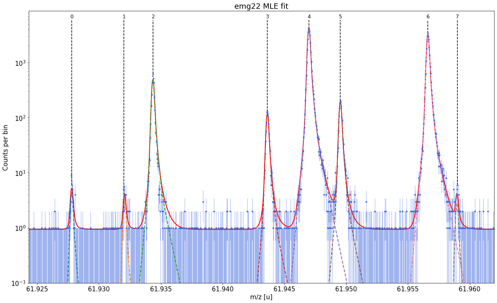 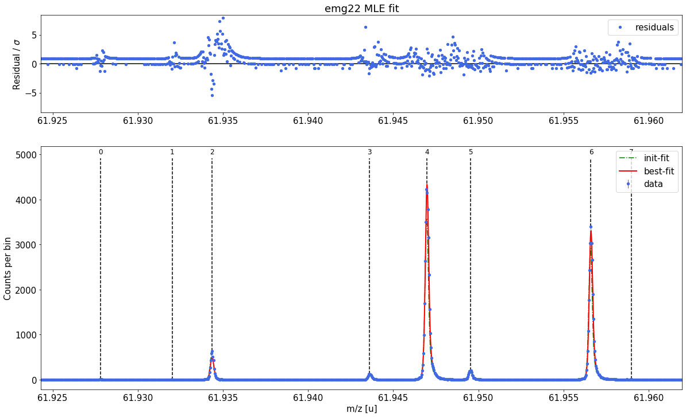##### Mass recalibration ##### Relative literature error of mass calibrant: 3e-09 Relative statistical error of mass calibrant: 1.1e-08 Recalibration factor: 0.999999711 = 1 -2.89e-07 Relative recalibration error: 1.1e-08 ##### Peak-shape uncertainty evaluation ##### Determining absolute centroid shifts of mass calibrant.Re-fitting with sigma = 8.3e-05 +/- 3e-06 shifts Δm of peak 0 and mass calibrant by 0.497351 / -0.268 μu. Re-fitting with sigma = 8.3e-05 +/- 3e-06 shifts Δm of peak 1 and mass calibrant by 1.419093 / -0.367 μu. Re-fitting with sigma = 8.3e-05 +/- 3e-06 shifts Δm of peak 2 and mass calibrant by -0.124145 / 0.337 μu. Re-fitting with sigma = 8.3e-05 +/- 3e-06 shifts Δm of peak 3 and mass calibrant by 0.009668 / 0.025 μu. Re-fitting with sigma = 8.3e-05 +/- 3e-06 shifts Δm of peak 5 and mass calibrant by -0.014 / 0.002 μu. Re-fitting with sigma = 8.3e-05 +/- 3e-06 shifts Δm of peak 6 and mass calibrant by 0.011673 / -0.032 μu. Re-fitting with sigma = 8.3e-05 +/- 3e-06 shifts Δm of peak 7 and mass calibrant by -1.469091 / 0.908 μu.Re-fitting with theta = 0.724714 +/- 0.023491 shifts Δm of peak 0 and mass calibrant by -1.447894 / 1.312 μu. Re-fitting with theta = 0.724714 +/- 0.023491 shifts Δm of peak 1 and mass calibrant by -1.406527 / 1.334 μu. Re-fitting with theta = 0.724714 +/- 0.023491 shifts Δm of peak 2 and mass calibrant by -0.434006 / 0.331 μu. Re-fitting with theta = 0.724714 +/- 0.023491 shifts Δm of peak 3 and mass calibrant by -0.254027 / 0.14 μu. Re-fitting with theta = 0.724714 +/- 0.023491 shifts Δm of peak 5 and mass calibrant by -0.269747 / 0.237 μu. Re-fitting with theta = 0.724714 +/- 0.023491 shifts Δm of peak 6 and mass calibrant by -0.090195 / 0.031 μu. Re-fitting with theta = 0.724714 +/- 0.023491 shifts Δm of peak 7 and mass calibrant by -1.874815 / 1.815 μu.Re-fitting with eta_m1 = 0.920191 +/- 0.023131 shifts Δm of peak 0 and mass calibrant by 0.789394 / -0.741 μu. Re-fitting with eta_m1 = 0.920191 +/- 0.023131 shifts Δm of peak 1 and mass calibrant by 0.461701 / -0.356 μu. Re-fitting with eta_m1 = 0.920191 +/- 0.023131 shifts Δm of peak 2 and mass calibrant by 0.451256 / -0.44 μu. Re-fitting with eta_m1 = 0.920191 +/- 0.023131 shifts Δm of peak 3 and mass calibrant by 0.404974 / -0.411 μu. Re-fitting with eta_m1 = 0.920191 +/- 0.023131 shifts Δm of peak 5 and mass calibrant by 0.307791 / -0.254 μu. Re-fitting with eta_m1 = 0.920191 +/- 0.023131 shifts Δm of peak 6 and mass calibrant by 0.014113 / -0.104 μu. Re-fitting with eta_m1 = 0.920191 +/- 0.023131 shifts Δm of peak 7 and mass calibrant by 0.687914 / -0.701 μu.Re-fitting with tau_m1 = 4.5e-05 +/- 6e-06 shifts Δm of peak 0 and mass calibrant by -0.57012 / 0.613 μu. Re-fitting with tau_m1 = 4.5e-05 +/- 6e-06 shifts Δm of peak 1 and mass calibrant by 0.842104 / 0.017 μu. Re-fitting with tau_m1 = 4.5e-05 +/- 6e-06 shifts Δm of peak 2 and mass calibrant by -0.310449 / 0.48 μu. Re-fitting with tau_m1 = 4.5e-05 +/- 6e-06 shifts Δm of peak 3 and mass calibrant by -0.122483 / 0.103 μu. Re-fitting with tau_m1 = 4.5e-05 +/- 6e-06 shifts Δm of peak 5 and mass calibrant by -0.211685 / 0.112 μu. Re-fitting with tau_m1 = 4.5e-05 +/- 6e-06 shifts Δm of peak 6 and mass calibrant by -0.031523 / -0.011 μu. Re-fitting with tau_m1 = 4.5e-05 +/- 6e-06 shifts Δm of peak 7 and mass calibrant by -2.051389 / 1.601 μu.Re-fitting with tau_m2 = 0.000177 +/- 2.5e-05 shifts Δm of peak 0 and mass calibrant by -0.292169 / 0.398 μu. Re-fitting with tau_m2 = 0.000177 +/- 2.5e-05 shifts Δm of peak 1 and mass calibrant by -0.191013 / 0.302 μu. Re-fitting with tau_m2 = 0.000177 +/- 2.5e-05 shifts Δm of peak 2 and mass calibrant by -0.207079 / 0.247 μu. Re-fitting with tau_m2 = 0.000177 +/- 2.5e-05 shifts Δm of peak 3 and mass calibrant by -0.198827 / 0.265 μu. Re-fitting with tau_m2 = 0.000177 +/- 2.5e-05 shifts Δm of peak 5 and mass calibrant by -0.079733 / 0.189 μu. Re-fitting with tau_m2 = 0.000177 +/- 2.5e-05 shifts Δm of peak 6 and mass calibrant by -0.040283 / 0.025 μu. Re-fitting with tau_m2 = 0.000177 +/- 2.5e-05 shifts Δm of peak 7 and mass calibrant by 0.104562 / 0.023 μu.Re-fitting with eta_p1 = 0.790092 +/- 0.044934 shifts Δm of peak 0 and mass calibrant by -0.25787 / 0.127 μu. Re-fitting with eta_p1 = 0.790092 +/- 0.044934 shifts Δm of peak 1 and mass calibrant by -0.30804 / 0.236 μu. Re-fitting with eta_p1 = 0.790092 +/- 0.044934 shifts Δm of peak 2 and mass calibrant by -0.266946 / 0.17 μu. Re-fitting with eta_p1 = 0.790092 +/- 0.044934 shifts Δm of peak 3 and mass calibrant by -0.253966 / 0.15 μu. Re-fitting with eta_p1 = 0.790092 +/- 0.044934 shifts Δm of peak 5 and mass calibrant by -0.234102 / 0.188 μu. Re-fitting with eta_p1 = 0.790092 +/- 0.044934 shifts Δm of peak 6 and mass calibrant by 0.005052 / -0.022 μu. Re-fitting with eta_p1 = 0.790092 +/- 0.044934 shifts Δm of peak 7 and mass calibrant by -3.950558 / 3.447 μu.Re-fitting with tau_p1 = 0.000124 +/- 1.3e-05 shifts Δm of peak 0 and mass calibrant by 0.599944 / -0.879 μu. Re-fitting with tau_p1 = 0.000124 +/- 1.3e-05 shifts Δm of peak 1 and mass calibrant by 0.623284 / -0.843 μu. Re-fitting with tau_p1 = 0.000124 +/- 1.3e-05 shifts Δm of peak 2 and mass calibrant by 0.381975 / -0.49 μu. Re-fitting with tau_p1 = 0.000124 +/- 1.3e-05 shifts Δm of peak 3 and mass calibrant by 0.214752 / -0.268 μu. Re-fitting with tau_p1 = 0.000124 +/- 1.3e-05 shifts Δm of peak 5 and mass calibrant by 0.04681 / -0.092 μu. Re-fitting with tau_p1 = 0.000124 +/- 1.3e-05 shifts Δm of peak 6 and mass calibrant by -0.039735 / -0.043 μu. Re-fitting with tau_p1 = 0.000124 +/- 1.3e-05 shifts Δm of peak 7 and mass calibrant by 0.724091 / -0.84 μu.Re-fitting with tau_p2 = 0.000408 +/- 5.5e-05 shifts Δm of peak 0 and mass calibrant by -0.047889 / -0.028 μu. Re-fitting with tau_p2 = 0.000408 +/- 5.5e-05 shifts Δm of peak 1 and mass calibrant by 0.075925 / -0.105 μu. Re-fitting with tau_p2 = 0.000408 +/- 5.5e-05 shifts Δm of peak 2 and mass calibrant by 0.019801 / -0.089 μu. Re-fitting with tau_p2 = 0.000408 +/- 5.5e-05 shifts Δm of peak 3 and mass calibrant by 0.053686 / -0.141 μu. Re-fitting with tau_p2 = 0.000408 +/- 5.5e-05 shifts Δm of peak 5 and mass calibrant by 0.39755 / -0.396 μu. Re-fitting with tau_p2 = 0.000408 +/- 5.5e-05 shifts Δm of peak 6 and mass calibrant by -0.049006 / 0.027 μu. Re-fitting with tau_p2 = 0.000408 +/- 5.5e-05 shifts Δm of peak 7 and mass calibrant by 5.770581 / -7.819 μu. Relative peak-shape error of peak 0: 3.4e-08 Relative peak-shape error of peak 1: 3.9e-08 Relative peak-shape error of peak 2: 1.7e-08 Relative peak-shape error of peak 3: 1.1e-08 Relative peak-shape error of peak 5: 1.1e-08 Relative peak-shape error of peak 6: 3e-09 Relative peak-shape error of peak 7: 1.51e-07
x_pos species comment m_AME m_AME_error extrapolated fit_model cost_func red_chi area area_error m_fit rel_stat_error rel_recal_error rel_peakshape_error rel_mass_error A atomic_ME_keV mass_error_keV m_dev_keV 0 61.927800 Ni62:-1e - 61.927796 4.700000e-07 False emg22 MLE 0.57 34.28 5.57 61.927803 3.442326e-07 1.129785e-08 3.363411e-08 3.460563e-07 62.0 -66740.227 19.962389 6.103 1 61.932021 Cu62:-1e - 61.932046 6.940000e-07 False emg22 MLE 0.57 25.16 5.57 61.932083 4.017788e-07 1.129785e-08 3.896350e-08 4.038217e-07 62.0 -62753.555 23.296222 33.878 2 61.934369 ? Non-isobaric NaN NaN False emg22 MLE 0.57 3879.62 47.60 61.934370 3.235428e-08 1.129785e-08 1.705508e-08 3.827945e-08 NaN NaN 2.208399 NaN 3 61.943618 Ga62:-1e - 61.943641 6.940000e-07 False emg22 MLE 0.57 939.07 23.68 61.943636 6.575251e-08 1.129785e-08 1.113420e-08 6.763878e-08 62.0 -51992.089 3.902766 -5.177 4 61.946994 Ti46:O16:-1e mass calibrant 61.946993 1.760001e-07 False emg22 MLE 0.57 33951.28 140.21 61.946993 1.093477e-08 1.129785e-08 NaN NaN 62.0 -48864.806 NaN 0.000 5 61.949527 Sc46:O16:-1e - 61.949534 7.320000e-07 False emg22 MLE 0.57 1542.61 30.25 61.949540 5.129699e-08 1.129785e-08 1.106221e-08 5.367862e-08 62.0 -46492.523 3.097559 5.702 6 61.956611 Ca43:F19:-1e shape calibrant 61.956621 2.440018e-07 False emg22 MLE 0.57 25913.21 121.87 61.956622 1.251439e-08 1.129785e-08 2.667552e-09 1.706948e-08 62.0 -39895.649 0.985118 0.623 7 61.958997 ? - NaN NaN False emg22 MLE 0.57 22.08 5.39 61.958978 4.287007e-07 1.129785e-08 1.512691e-07 4.547464e-07 NaN NaN 26.245427 NaN Model
((((((((Model(constant, prefix='bkg_') + Model(emg22, prefix='p0_')) + Model(emg22, prefix='p1_')) + Model(emg22, prefix='p2_')) + Model(emg22, prefix='p3_')) + Model(emg22, prefix='p4_')) + Model(emg22, prefix='p5_')) + Model(emg22, prefix='p6_')) + Model(emg22, prefix='p7_'))Fit Statistics
fitting method least_squares # function evals 9 # data points 1027 # variables 17 chi-square 576.182030 reduced chi-square 0.57047726 Akaike info crit. -559.578861 Bayesian info crit. -475.694109 Variables
name value standard error relative error initial value min max vary expression bkg_c 0.93849905 0.04823274 (5.14%) 0.1 0.00000000 4.00000000 True p0_amp 0.00125783 2.0445e-04 (16.25%) 0.001488 1.0000e-20 inf True p0_mu 61.9278207 2.2787e-05 (0.00%) 61.927800309876424 61.9178003 61.9378003 True p0_sigma 8.3414e-05 0.00000000 (0.00%) 8.341444351311295e-05 0.00000000 0.00508341 False p0_theta 0.72471396 0.00000000 (0.00%) 0.724713961354256 0.00000000 1.00000000 False p0_eta_m1 0.92019054 0.00000000 (0.00%) 0.9201905356472759 0.00000000 1.00000000 False p0_eta_m2 0.07980946 0.00000000 (0.00%) 0.07980946435272407 0.00000000 1.00000000 False 1-p0_eta_m1 p0_tau_m1 4.4900e-05 0.00000000 (0.00%) 4.490011233364427e-05 1.0000e-12 0.05000000 False p0_tau_m2 1.7683e-04 0.00000000 (0.00%) 0.0001768253599220442 1.0000e-12 0.05000000 False p0_eta_p1 0.79009179 0.00000000 (0.00%) 0.7900917915552933 0.00000000 1.00000000 False p0_eta_p2 0.20990821 0.00000000 (0.00%) 0.2099082084447067 0.00000000 1.00000000 False 1-p0_eta_p1 p0_tau_p1 1.2412e-04 0.00000000 (0.00%) 0.00012412456123840068 1.0000e-12 0.05000000 False p0_tau_p2 4.0762e-04 0.00000000 (0.00%) 0.00040761699179939085 1.0000e-12 0.05000000 False p1_amp 9.2335e-04 2.0443e-04 (22.14%) 0.000496 1.0000e-20 inf True p1_mu 61.9321006 2.9321e-05 (0.00%) 61.93202053070152 61.9220205 61.9420205 True p1_sigma 8.3414e-05 0.00000000 (0.00%) 8.341444351311295e-05 0.00000000 0.00508341 False p1_theta 0.72471396 0.00000000 (0.00%) 0.724713961354256 0.00000000 1.00000000 False p1_eta_m1 0.92019054 0.00000000 (0.00%) 0.9201905356472759 0.00000000 1.00000000 False p1_eta_m2 0.07980946 0.00000000 (0.00%) 0.07980946435272407 0.00000000 1.00000000 False 1-p1_eta_m1 p1_tau_m1 4.4900e-05 0.00000000 (0.00%) 4.490011233364427e-05 1.0000e-12 0.05000000 False p1_tau_m2 1.7683e-04 0.00000000 (0.00%) 0.0001768253599220442 1.0000e-12 0.05000000 False p1_eta_p1 0.79009179 0.00000000 (0.00%) 0.7900917915552933 0.00000000 1.00000000 False p1_eta_p2 0.20990821 0.00000000 (0.00%) 0.2099082084447067 0.00000000 1.00000000 False 1-p1_eta_p1 p1_tau_p1 1.2412e-04 0.00000000 (0.00%) 0.00012412456123840068 1.0000e-12 0.05000000 False p1_tau_p2 4.0762e-04 0.00000000 (0.00%) 0.00040761699179939085 1.0000e-12 0.05000000 False p2_amp 0.14236628 0.00174660 (1.23%) 0.15648800000000002 1.0000e-20 inf True p2_mu 61.9343876 1.5546e-06 (0.00%) 61.93436923761443 61.9243692 61.9443692 True p2_sigma 8.3414e-05 0.00000000 (0.00%) 8.341444351311295e-05 0.00000000 0.00508341 False p2_theta 0.72471396 0.00000000 (0.00%) 0.724713961354256 0.00000000 1.00000000 False p2_eta_m1 0.92019054 0.00000000 (0.00%) 0.9201905356472759 0.00000000 1.00000000 False p2_eta_m2 0.07980946 0.00000000 (0.00%) 0.07980946435272407 0.00000000 1.00000000 False 1-p2_eta_m1 p2_tau_m1 4.4900e-05 0.00000000 (0.00%) 4.490011233364427e-05 1.0000e-12 0.05000000 False p2_tau_m2 1.7683e-04 0.00000000 (0.00%) 0.0001768253599220442 1.0000e-12 0.05000000 False p2_eta_p1 0.79009179 0.00000000 (0.00%) 0.7900917915552933 0.00000000 1.00000000 False p2_eta_p2 0.20990821 0.00000000 (0.00%) 0.2099082084447067 0.00000000 1.00000000 False 1-p2_eta_p1 p2_tau_p1 1.2412e-04 0.00000000 (0.00%) 0.00012412456123840068 1.0000e-12 0.05000000 False p2_tau_p2 4.0762e-04 0.00000000 (0.00%) 0.00040761699179939085 1.0000e-12 0.05000000 False p3_amp 0.03445992 8.6903e-04 (2.52%) 0.031992 1.0000e-20 inf True p3_mu 61.9436535 3.1399e-06 (0.00%) 61.943617703998214 61.9336177 61.9536177 True p3_sigma 8.3414e-05 0.00000000 (0.00%) 8.341444351311295e-05 0.00000000 0.00508341 False p3_theta 0.72471396 0.00000000 (0.00%) 0.724713961354256 0.00000000 1.00000000 False p3_eta_m1 0.92019054 0.00000000 (0.00%) 0.9201905356472759 0.00000000 1.00000000 False p3_eta_m2 0.07980946 0.00000000 (0.00%) 0.07980946435272407 0.00000000 1.00000000 False 1-p3_eta_m1 p3_tau_m1 4.4900e-05 0.00000000 (0.00%) 4.490011233364427e-05 1.0000e-12 0.05000000 False p3_tau_m2 1.7683e-04 0.00000000 (0.00%) 0.0001768253599220442 1.0000e-12 0.05000000 False p3_eta_p1 0.79009179 0.00000000 (0.00%) 0.7900917915552933 0.00000000 1.00000000 False p3_eta_p2 0.20990821 0.00000000 (0.00%) 0.2099082084447067 0.00000000 1.00000000 False 1-p3_eta_p1 p3_tau_p1 1.2412e-04 0.00000000 (0.00%) 0.00012412456123840068 1.0000e-12 0.05000000 False p3_tau_p2 4.0762e-04 0.00000000 (0.00%) 0.00040761699179939085 1.0000e-12 0.05000000 False p4_amp 1.24587330 0.00514515 (0.41%) 1.0294480000000001 1.0000e-20 inf True p4_mu 61.9470108 5.3152e-07 (0.00%) 61.946994300285866 61.9369943 61.9569943 True p4_sigma 8.3414e-05 0.00000000 (0.00%) 8.341444351311295e-05 0.00000000 0.00508341 False p4_theta 0.72471396 0.00000000 (0.00%) 0.724713961354256 0.00000000 1.00000000 False p4_eta_m1 0.92019054 0.00000000 (0.00%) 0.9201905356472759 0.00000000 1.00000000 False p4_eta_m2 0.07980946 0.00000000 (0.00%) 0.07980946435272407 0.00000000 1.00000000 False 1-p4_eta_m1 p4_tau_m1 4.4900e-05 0.00000000 (0.00%) 4.490011233364427e-05 1.0000e-12 0.05000000 False p4_tau_m2 1.7683e-04 0.00000000 (0.00%) 0.0001768253599220442 1.0000e-12 0.05000000 False p4_eta_p1 0.79009179 0.00000000 (0.00%) 0.7900917915552933 0.00000000 1.00000000 False p4_eta_p2 0.20990821 0.00000000 (0.00%) 0.2099082084447067 0.00000000 1.00000000 False 1-p4_eta_p1 p4_tau_p1 1.2412e-04 0.00000000 (0.00%) 0.00012412456123840068 1.0000e-12 0.05000000 False p4_tau_p2 4.0762e-04 0.00000000 (0.00%) 0.00040761699179939085 1.0000e-12 0.05000000 False p5_amp 0.05660752 0.00111021 (1.96%) 0.050095999999999995 1.0000e-20 inf True p5_mu 61.9495575 2.4749e-06 (0.00%) 61.94952680789496 61.9395268 61.9595268 True p5_sigma 8.3414e-05 0.00000000 (0.00%) 8.341444351311295e-05 0.00000000 0.00508341 False p5_theta 0.72471396 0.00000000 (0.00%) 0.724713961354256 0.00000000 1.00000000 False p5_eta_m1 0.92019054 0.00000000 (0.00%) 0.9201905356472759 0.00000000 1.00000000 False p5_eta_m2 0.07980946 0.00000000 (0.00%) 0.07980946435272407 0.00000000 1.00000000 False 1-p5_eta_m1 p5_tau_m1 4.4900e-05 0.00000000 (0.00%) 4.490011233364427e-05 1.0000e-12 0.05000000 False p5_tau_m2 1.7683e-04 0.00000000 (0.00%) 0.0001768253599220442 1.0000e-12 0.05000000 False p5_eta_p1 0.79009179 0.00000000 (0.00%) 0.7900917915552933 0.00000000 1.00000000 False p5_eta_p2 0.20990821 0.00000000 (0.00%) 0.2099082084447067 0.00000000 1.00000000 False 1-p5_eta_p1 p5_tau_p1 1.2412e-04 0.00000000 (0.00%) 0.00012412456123840068 1.0000e-12 0.05000000 False p5_tau_p2 4.0762e-04 0.00000000 (0.00%) 0.00040761699179939085 1.0000e-12 0.05000000 False p6_amp 0.95090900 0.00447198 (0.47%) 0.8422080000000001 1.0000e-20 inf True p6_mu 61.9566396 5.8891e-07 (0.00%) 61.95661076349748 61.9466108 61.9666108 True p6_sigma 8.3414e-05 0.00000000 (0.00%) 8.341444351311295e-05 0.00000000 0.00508341 False p6_theta 0.72471396 0.00000000 (0.00%) 0.724713961354256 0.00000000 1.00000000 False p6_eta_m1 0.92019054 0.00000000 (0.00%) 0.9201905356472759 0.00000000 1.00000000 False p6_eta_m2 0.07980946 0.00000000 (0.00%) 0.07980946435272407 0.00000000 1.00000000 False 1-p6_eta_m1 p6_tau_m1 4.4900e-05 0.00000000 (0.00%) 4.490011233364427e-05 1.0000e-12 0.05000000 False p6_tau_m2 1.7683e-04 0.00000000 (0.00%) 0.0001768253599220442 1.0000e-12 0.05000000 False p6_eta_p1 0.79009179 0.00000000 (0.00%) 0.7900917915552933 0.00000000 1.00000000 False p6_eta_p2 0.20990821 0.00000000 (0.00%) 0.2099082084447067 0.00000000 1.00000000 False 1-p6_eta_p1 p6_tau_p1 1.2412e-04 0.00000000 (0.00%) 0.00012412456123840068 1.0000e-12 0.05000000 False p6_tau_p2 4.0762e-04 0.00000000 (0.00%) 0.00040761699179939085 1.0000e-12 0.05000000 False p7_amp 8.1013e-04 1.9778e-04 (24.41%) 0.001488 1.0000e-20 inf True p7_mu 61.9589959 3.5423e-05 (0.00%) 61.95899664282278 61.9489966 61.9689966 True p7_sigma 8.3414e-05 0.00000000 (0.00%) 8.341444351311295e-05 0.00000000 0.00508341 False p7_theta 0.72471396 0.00000000 (0.00%) 0.724713961354256 0.00000000 1.00000000 False p7_eta_m1 0.92019054 0.00000000 (0.00%) 0.9201905356472759 0.00000000 1.00000000 False p7_eta_m2 0.07980946 0.00000000 (0.00%) 0.07980946435272407 0.00000000 1.00000000 False 1-p7_eta_m1 p7_tau_m1 4.4900e-05 0.00000000 (0.00%) 4.490011233364427e-05 1.0000e-12 0.05000000 False p7_tau_m2 1.7683e-04 0.00000000 (0.00%) 0.0001768253599220442 1.0000e-12 0.05000000 False p7_eta_p1 0.79009179 0.00000000 (0.00%) 0.7900917915552933 0.00000000 1.00000000 False p7_eta_p2 0.20990821 0.00000000 (0.00%) 0.2099082084447067 0.00000000 1.00000000 False 1-p7_eta_p1 p7_tau_p1 1.2412e-04 0.00000000 (0.00%) 0.00012412456123840068 1.0000e-12 0.05000000 False p7_tau_p2 4.0762e-04 0.00000000 (0.00%) 0.00040761699179939085 1.0000e-12 0.05000000 False Correlations (unreported correlations are < 0.100)
p1_amp p1_mu 0.2215 p7_amp p7_mu -0.1828 bkg_c p7_amp -0.1291 bkg_c p1_amp -0.1260 bkg_c p0_amp -0.1135 p4_amp p4_mu -0.1059
Get method docs by:
Get attribute docs by:
Central concepts: peaks spectrum class peaks list peak identification
Include example spectrum in package (also for doctests).